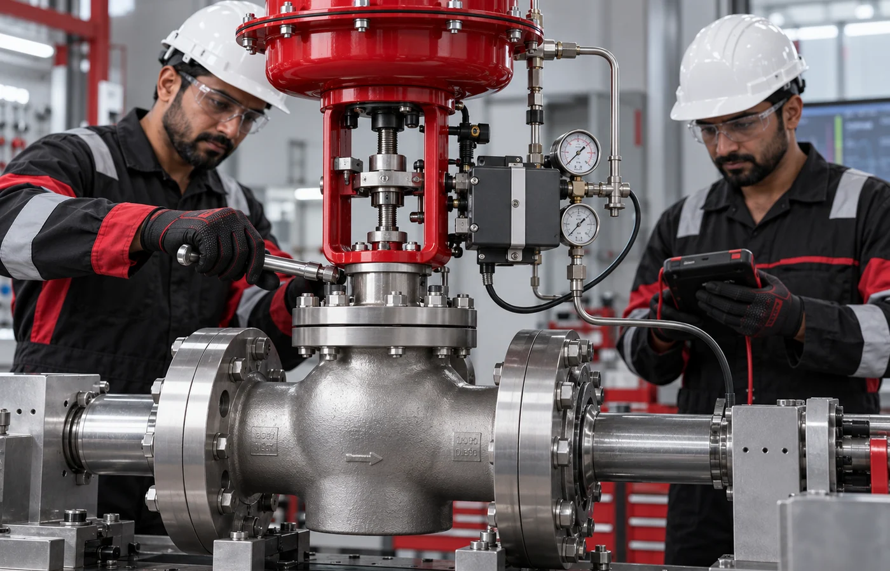
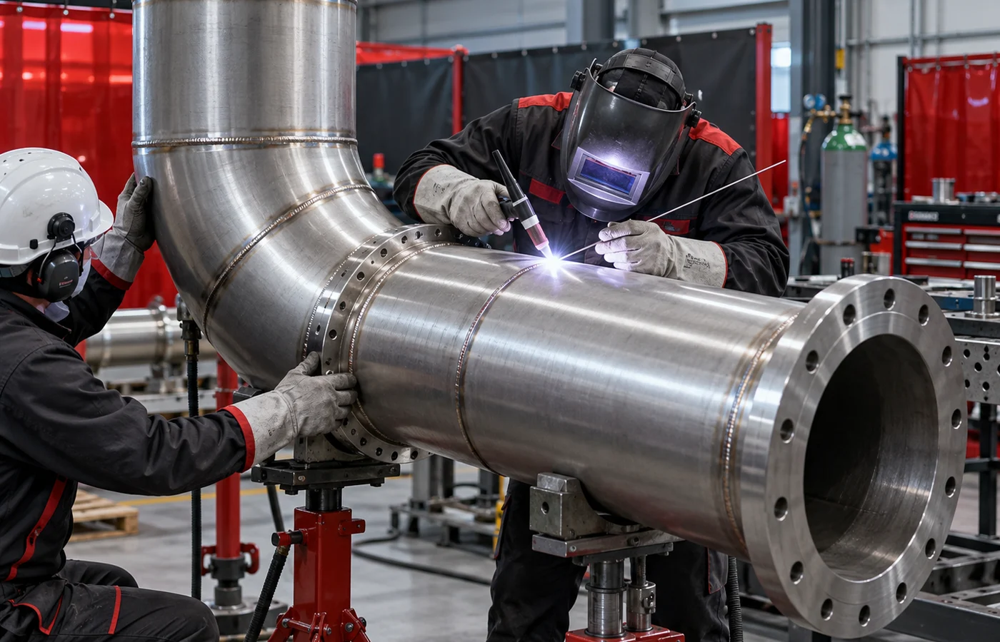

What we do
Services built for demanding industries.
Core capabilities
Workshop precision. Field-ready expertise.
Responsive support for planned maintenance, shutdowns, emergencies and long-term asset performance.

Valve refurbishment
Inspection, overhaul, testing and certification for conventional and safety valves.

Boiler maintenance
HRSG and industrial boiler inspection, repair and outage support.

Turbine maintenance
Precision service for steam and gas turbine systems.

Fabrication & erection
Industrial steelwork, piping and on-site erection delivered safely.
Technical manpower
Qualified personnel ready for projects, shutdowns and maintenance.

Machining & reverse engineering
Precision restoration and component replication for critical equipment.
Need technical support?
Request a quote